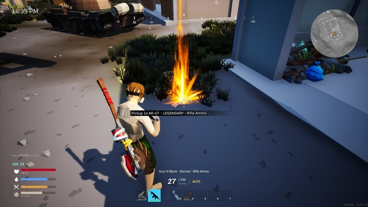
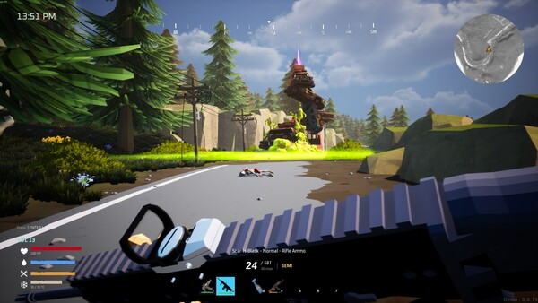
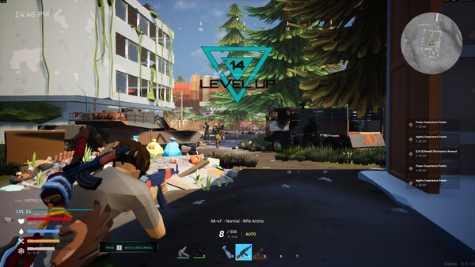
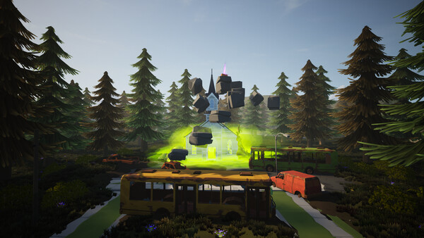

GAMING WORLD
GAMING WORLD




In this world, only two clones remain you and your brother.
But your brother is consumed by rage. He believes humanity must be punished, that everyone should die for what they've done to you both. He destroyed the laboratory, slaughtered everyone inside, and even killed you… yet left you alive.
Now he hunts for control of the New World. If you follow his path, he will kill you again. The only way to survive is to grow stronger than him: level up, find better gear, and unlock new powers.
Scattered across the land are mysterious Crystals. These fragments hold pieces of your lost memory, guiding you through the story while granting experience and rewards. Collect them, uncover the truth, and prepare for the final fight against your brother.
Source: Steam
OS
Windows 10-11
Processor
Intel I7
Memory
16 GB RAM
Graphics
RTX 3060
DirectX
Version 11
Storage
20 MB available space

Shatterland is a co-op zombie survival game with base-building and exploration. Loot resources, craft weapons, build with friends, and fight through a devastated world filled with the undead, hostile survivors, and military secrets.
RPG
Shooter
Exploration
PvE
Singleplayer
Open World
Release Date
12 December 2025
Developers
LastPulse Studio
Platforms
Microsoft Windows
Publisher
LastPulse Studio